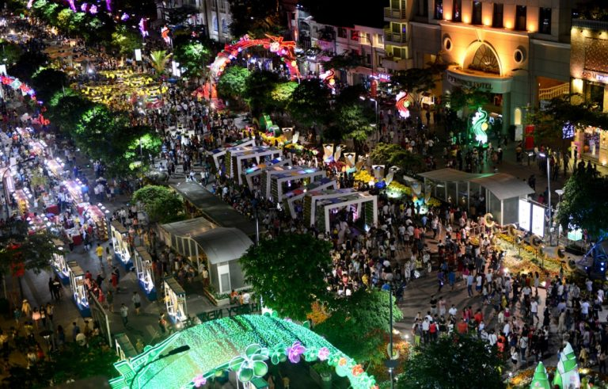

Phố đi bộ Người Hoa

Yêu thích nét thơ mộng nơi đây.
Phố đi bộ Nguyễn Huệ – điểm đến được mở hàng ngày trong tuần. Bạn có thể đến đây bất cứ khi nào bạn thích. Nếu đã đến Sài Gòn thì bạn chắc chắn dạo một vòng mới gọi là đã đến Sài Gòn.
Phố đi bộ Nguyễn Huệ
Phố Người Hoa – địa điểm du lịch Sài Gòn miễn phí – Chợ lớn Sài Gòn. Nơi đây mang phong cách thiết kế đến văn hóa thể hiện nét tinh hoa của người Triều Châu. Nơi tạo nên mảng màu sắc hoàn toàn khác biệt khá độ đáo.
Phố đi bộ Người Hoa
Khu Vui Chơi Giải Trí Thỏ Trắng nằm trong top địa điểm vui chơi tuyệt vời. Nơi cho những trải nghiệm cùng trò chơi kha hiện đại từ cảm giác mạnh đến sự nhẹ nhàng.
Công viên thỏ trắng

Khu Du Lịch Văn Hóa Suối Tiên là địa điểm du lịch Sài Gòn có giờ mở cửa từ 8h00 – 17h30 (Thứ 2 – Thứ 6), 8h00 – 18h00 (Thứ 7 và Chủ nhật), 6h30 – 22h00 (Lễ Tết). Vé vào cổng là 60.000VND/người lớn, 30.000VND/trẻ em; Vé các trò chơi: 5.000 – 40.000VND/lượt.
Suối tiên